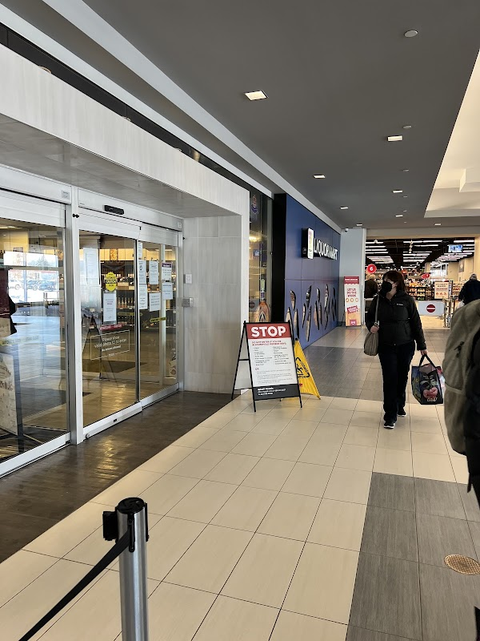

Where to pick up wine, beer, or spirits near the Corydon Airbnb

If you're used to grabbing a bottle of wine at the grocery store, Manitoba will feel different. Beer, wine, and spirits here are sold through government-run Liquor Marts (plus a smaller number of private beer vendors and wine stores) rather than at supermarkets or convenience stores, so it's worth knowing where the nearest one is before you plan a dinner in at the Airbnb. Here are the two closest to Corydon and Crescentwood.
Closest: River & Osborne Liquor Mart
River & Osborne Liquor Mart (469 River Ave) sits in Osborne Village, a short walk or quick drive from the Corydon/Crescentwood area, and carries a full range of beer, wine, and spirits. It's one of the busier locations in the city given how central it is.
Biggest selection: Grant Park Liquor Mart
Grant Park Liquor Mart (1120 Grant Ave), inside Grant Park Shopping Centre a few minutes south, is the largest Liquor Mart in the province, with a much wider selection of wine and spirits if you're after something specific.
Good to know: Alcohol isn't sold at grocery or convenience stores in Manitoba, and you'll need government-issued photo ID showing you're 18 or older. Hours can be shorter on Sundays and statutory holidays and do change, so check the current hours online (liquormarts.ca) or call ahead before a special trip, rather than assuming weekday hours apply.